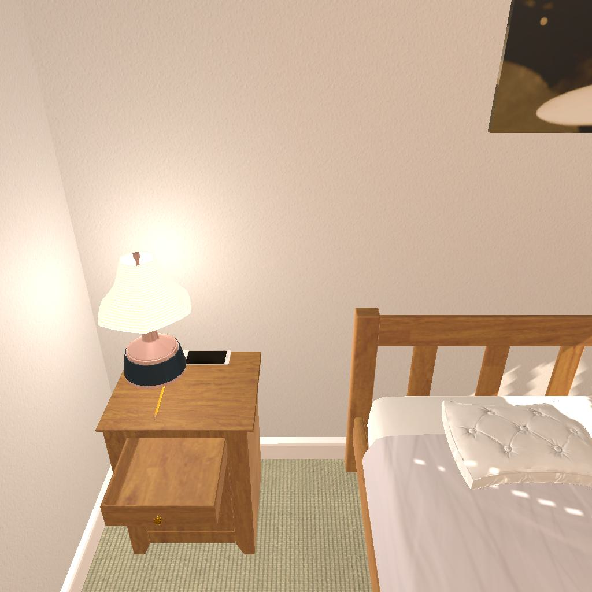

---------------------------------------------------------task: 0---------------------------------------------------------
--------------------------------------------------------------------------------------------------------------------------------------------------------------------
--------------------------------------------------------------------------------------------------------------------------------------------------------------------
Step:--------------------------------------------------------------------------7-------------------------------------------------------------------------------
----------------------------------------
VLM Prompt:
Image1:
Image2:
Image3:
**Instruction**
1. Analyze the provided images to identify all visible household objects and compare the difference between images (e.h. whether the object is opened or not and taken on hand or not), focusing on those relevant to the task description "look at alarmclock under the desklamp."
2. Use the analysis of images and the task hint "The agent must find an object of the desired type, locate and turn on a light source with the desired object in-hand." to answer the question: what is the most reasonable action in the choices for the task description "look at alarmclock under the desklamp"?
3. Decide and write the answer using the template: The answer is: (i): , where i is the real number. If there is no desired object in images, search every place based on **Initial Observation** to find the object. And if no one is exactly correct, choose a similar answer.
**Initial Observation**
You are in the middle of a room. Looking quickly around you, you can see bed (1), sidetable (1), drawer (1-11), dresser (1), safe (1), laundryhamper (1), garbagecan (1)
**Answer Choices**
(1): go to bed 1
(2): go to sidetable 1
(3): go to drawer 1
(4): go to dresser 1
(5): go to drawer 3
(6): go to drawer 4
(7): go to drawer 5
(8): go to drawer 6
(9): go to drawer 7
(10): go to drawer 8
(11): go to drawer 9
(12): go to drawer 10
(13): go to drawer 11
(14): go to safe 1
(15): go to laundryhamper 1
(16): go to garbagecan 1
(17): open drawer 2
(18): close drawer 2
(19): examine drawer 2
**Answer**
Let's think step by step by following the instructions.
----------------------------------------
----------------------------------------
Original Response:
First, we analyze the provided images. In Image1 and Image2, we can see a sidetable with a desklamp on it. The images are very similar, and there doesn't seem to be any difference between them in terms of objects being opened or taken on hand. There is no visible alarm clock on or around the sidetable. In Image3, we see a dresser with various objects on top, but there is no alarm clock visible either.
Now, using the analysis of images and the task hint, the most reasonable action for the task description "look at alarmclock under the desklamp" would be to find the alarm clock first. Since there is no alarm clock in the visible images, we must search every place based on the Initial Observation.
Based on Initial Observation, the most reasonable places to search for an alarm clock would be the sidetable or the drawers, as these are common places where one might keep an alarm clock. Since the sidetable is already visible in the images and there is no alarm clock, the next logical step would be to check the drawers.
Drawer 2 is already partially open in Image3, and we are looking for an alarm clock under a desklamp, which implies we should focus on finding the alarm clock first. Therefore, the most reasonable action would be to examine drawer 2 to see if the alarm clock is inside.
The answer is: (19): examine drawer 2.
----------------------------------------
----------------------------------------
>>> Refine Original VLM Response and Get Pure Action: examine drawer 2
----------------------------------------
-----------------------------------------------------------------
Running time: 15.516355037689209 seconds
Total Money: 0.25969
-----------------------------------------------------------------
-----------------------------------------------------------------
Text Observation:On the drawer 2, you see a bowl 1, a alarmclock 1, a keychain 1, a pen 1, and a pencil 2.
-----------------------------------------------------------------
UNSUCCEED